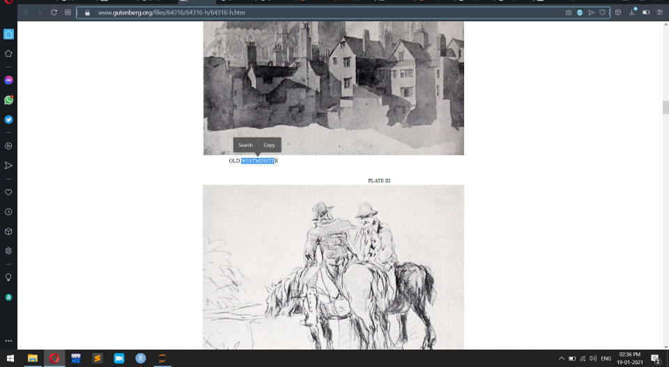

Mapping using Python¶
Here we use geotext library to extract places names from the sentence.
Installation of geotext modules¶
!pip install geotext
Requirement already satisfied: geotext in c:\users\mohanapriya\anaconda3\envs\jbook\lib\site-packages (0.4.0)
Example to use GeoText module¶
from geotext import GeoText
places = GeoText("I was in Chennai on that day and next day i went to Erode")
places.cities
['Chennai', 'Erode']
Example to Exract place names from a website¶
here we going to extract place names from the caption of the picture on the site , “https://www.gutenberg.org/files/64316/64316-h/64316-h.htm”
also we used the method of previous web scraping method using BeautifulSoup module

import urllib.request,sys,time
from bs4 import BeautifulSoup
import requests
import pandas as pd
from geotext import GeoText
---------------------------------------------------------------------------
ModuleNotFoundError Traceback (most recent call last)
<ipython-input-3-897b828d8aec> in <module>
2 from bs4 import BeautifulSoup
3 import requests
----> 4 import pandas as pd
5 from geotext import GeoText
ModuleNotFoundError: No module named 'pandas'
url="https://www.gutenberg.org/files/64316/64316-h/64316-h.htm"
page=requests.get(url)
soup=BeautifulSoup(page.text,'html.parser')
frame=[]
resultframe=[]
links=soup.find_all('div',attrs={'class':'ills'})
#links=soup.find_all('li',attrs={'class':'o-listicle__item'})
#print(links)
filename="caption.csv"
f=open(filename,"w", encoding = 'utf-8')
headers="Link,Caption\n"
f.write(headers)
u='https://www.gutenberg.org/files/64316/64316-h/'
for i in links:
k=i.find_all('div',attrs={'class':'figcenter'})
for j in k:
l=j.find_all('a')
Link = u+l[1].find('img')['src'].strip() #Extract Link of all the images
cap=j.find('p',attrs={'class':'caption'}).text.strip() #Extract caption of all the images
a=cap.replace(' ',',').title()
result = GeoText(a,'US').cities
if(result!=[]):
frame.append((Link,str(result[0])))
f.write(Link+","+str(result[0])+"\n") #stored only the link and caption that contains city names
resultframe.extend(frame)
f.close()
Result of the above Code¶
data=pd.DataFrame(resultframe, columns=['Link','Caption'])
print(data)
Link Caption
0 https://www.gutenberg.org/files/64316/64316-h/... Westminster
1 https://www.gutenberg.org/files/64316/64316-h/... Birmingham
2 https://www.gutenberg.org/files/64316/64316-h/... Kent
3 https://www.gutenberg.org/files/64316/64316-h/... Rotterdam
4 https://www.gutenberg.org/files/64316/64316-h/... Westminster
Installing arcgis to map the places¶
!pip install arcgis
Collecting arcgis
Downloading arcgis-1.8.3.post2.tar.gz (2.6 MB)
Requirement already satisfied: six in c:\users\mohanapriya\anaconda3\lib\site-packages (from arcgis) (1.15.0)
Requirement already satisfied: ipywidgets>=7 in c:\users\mohanapriya\anaconda3\lib\site-packages (from arcgis) (7.5.1)
Requirement already satisfied: widgetsnbextension>=3 in c:\users\mohanapriya\anaconda3\lib\site-packages (from arcgis) (3.5.1)
Requirement already satisfied: pandas>=1 in c:\users\mohanapriya\anaconda3\lib\site-packages (from arcgis) (1.0.5)
Requirement already satisfied: numpy>=1.16.2 in c:\users\mohanapriya\anaconda3\lib\site-packages (from arcgis) (1.18.5)
Requirement already satisfied: matplotlib in c:\users\mohanapriya\anaconda3\lib\site-packages (from arcgis) (3.2.2)
Requirement already satisfied: keyring>=19 in c:\users\mohanapriya\anaconda3\lib\site-packages (from arcgis) (21.2.1)
Processing c:\users\mohanapriya\appdata\local\pip\cache\wheels\4d\11\58\7d0a04db6c902ef42b717da2981807529f4922485141ab404f\lerc-0.1.0-py3-none-any.whl
Collecting ujson>=3
Using cached ujson-4.0.1-cp38-cp38-win_amd64.whl (44 kB)
Requirement already satisfied: jupyterlab in c:\users\mohanapriya\anaconda3\lib\site-packages (from arcgis) (2.1.5)
Collecting python-certifi-win32
Using cached python_certifi_win32-1.6-py2.py3-none-any.whl (7.2 kB)
Processing c:\users\mohanapriya\appdata\local\pip\cache\wheels\1f\1b\b5\54affbefc8a7e2bdf1da000fc576b8a1c91338f1f327a04f4c\pyshp-2.1.3-py3-none-any.whl
Requirement already satisfied: requests in c:\users\mohanapriya\anaconda3\lib\site-packages (from arcgis) (2.24.0)
Collecting requests-oauthlib
Using cached requests_oauthlib-1.3.0-py2.py3-none-any.whl (23 kB)
Collecting requests_toolbelt
Using cached requests_toolbelt-0.9.1-py2.py3-none-any.whl (54 kB)
Collecting requests_ntlm
Using cached requests_ntlm-1.1.0-py2.py3-none-any.whl (5.7 kB)
Requirement already satisfied: pywin32>=223 in c:\users\mohanapriya\anaconda3\lib\site-packages (from arcgis) (227)
Collecting requests-negotiate-sspi
Using cached requests_negotiate_sspi-0.5.2-py2.py3-none-any.whl (7.1 kB)
Collecting requests-kerberos
Using cached requests_kerberos-0.12.0-py2.py3-none-any.whl (14 kB)
Collecting winkerberos
Using cached winkerberos-0.7.0-cp38-cp38-win_amd64.whl (23 kB)
Requirement already satisfied: traitlets>=4.3.1 in c:\users\mohanapriya\anaconda3\lib\site-packages (from ipywidgets>=7->arcgis) (4.3.3)
Requirement already satisfied: ipython>=4.0.0; python_version >= "3.3" in c:\users\mohanapriya\anaconda3\lib\site-packages (from ipywidgets>=7->arcgis) (7.16.1)
Requirement already satisfied: ipykernel>=4.5.1 in c:\users\mohanapriya\anaconda3\lib\site-packages (from ipywidgets>=7->arcgis) (5.3.2)
Requirement already satisfied: nbformat>=4.2.0 in c:\users\mohanapriya\anaconda3\lib\site-packages (from ipywidgets>=7->arcgis) (5.0.7)
Requirement already satisfied: notebook>=4.4.1 in c:\users\mohanapriya\anaconda3\lib\site-packages (from widgetsnbextension>=3->arcgis) (6.0.3)
Requirement already satisfied: pytz>=2017.2 in c:\users\mohanapriya\anaconda3\lib\site-packages (from pandas>=1->arcgis) (2020.1)
Requirement already satisfied: python-dateutil>=2.6.1 in c:\users\mohanapriya\anaconda3\lib\site-packages (from pandas>=1->arcgis) (2.8.1)
Requirement already satisfied: kiwisolver>=1.0.1 in c:\users\mohanapriya\anaconda3\lib\site-packages (from matplotlib->arcgis) (1.2.0)
Requirement already satisfied: cycler>=0.10 in c:\users\mohanapriya\anaconda3\lib\site-packages (from matplotlib->arcgis) (0.10.0)
Requirement already satisfied: pyparsing!=2.0.4,!=2.1.2,!=2.1.6,>=2.0.1 in c:\users\mohanapriya\anaconda3\lib\site-packages (from matplotlib->arcgis) (2.4.7)
Requirement already satisfied: pywin32-ctypes!=0.1.0,!=0.1.1; sys_platform == "win32" in c:\users\mohanapriya\anaconda3\lib\site-packages (from keyring>=19->arcgis) (0.2.0)
Requirement already satisfied: tornado!=6.0.0,!=6.0.1,!=6.0.2 in c:\users\mohanapriya\anaconda3\lib\site-packages (from jupyterlab->arcgis) (6.0.4)
Requirement already satisfied: jupyterlab_server<2.0,>=1.1.0 in c:\users\mohanapriya\anaconda3\lib\site-packages (from jupyterlab->arcgis) (1.2.0)
Requirement already satisfied: jinja2>=2.10 in c:\users\mohanapriya\anaconda3\lib\site-packages (from jupyterlab->arcgis) (2.11.2)
Requirement already satisfied: wrapt>=1.10.4 in c:\users\mohanapriya\anaconda3\lib\site-packages (from python-certifi-win32->arcgis) (1.11.2)
Requirement already satisfied: certifi in c:\users\mohanapriya\anaconda3\lib\site-packages (from python-certifi-win32->arcgis) (2020.6.20)
Collecting setuptools-scm
Using cached setuptools_scm-5.0.1-py2.py3-none-any.whl (28 kB)
Requirement already satisfied: idna<3,>=2.5 in c:\users\mohanapriya\anaconda3\lib\site-packages (from requests->arcgis) (2.10)
Requirement already satisfied: chardet<4,>=3.0.2 in c:\users\mohanapriya\anaconda3\lib\site-packages (from requests->arcgis) (3.0.4)
Requirement already satisfied: urllib3!=1.25.0,!=1.25.1,<1.26,>=1.21.1 in c:\users\mohanapriya\anaconda3\lib\site-packages (from requests->arcgis) (1.25.9)
Collecting oauthlib>=3.0.0
Using cached oauthlib-3.1.0-py2.py3-none-any.whl (147 kB)
Collecting ntlm-auth>=1.0.2
Using cached ntlm_auth-1.5.0-py2.py3-none-any.whl (29 kB)
Requirement already satisfied: cryptography>=1.3 in c:\users\mohanapriya\anaconda3\lib\site-packages (from requests_ntlm->arcgis) (2.9.2)
Collecting pypiwin32>=223
Using cached pypiwin32-223-py3-none-any.whl (1.7 kB)
Requirement already satisfied: ipython-genutils in c:\users\mohanapriya\anaconda3\lib\site-packages (from traitlets>=4.3.1->ipywidgets>=7->arcgis) (0.2.0)
Requirement already satisfied: decorator in c:\users\mohanapriya\anaconda3\lib\site-packages (from traitlets>=4.3.1->ipywidgets>=7->arcgis) (4.4.2)
Requirement already satisfied: prompt-toolkit!=3.0.0,!=3.0.1,<3.1.0,>=2.0.0 in c:\users\mohanapriya\anaconda3\lib\site-packages (from ipython>=4.0.0; python_version >= "3.3"->ipywidgets>=7->arcgis) (3.0.5)
Requirement already satisfied: pickleshare in c:\users\mohanapriya\anaconda3\lib\site-packages (from ipython>=4.0.0; python_version >= "3.3"->ipywidgets>=7->arcgis) (0.7.5)
Requirement already satisfied: backcall in c:\users\mohanapriya\anaconda3\lib\site-packages (from ipython>=4.0.0; python_version >= "3.3"->ipywidgets>=7->arcgis) (0.2.0)
Requirement already satisfied: colorama; sys_platform == "win32" in c:\users\mohanapriya\anaconda3\lib\site-packages (from ipython>=4.0.0; python_version >= "3.3"->ipywidgets>=7->arcgis) (0.4.3)
Requirement already satisfied: jedi>=0.10 in c:\users\mohanapriya\anaconda3\lib\site-packages (from ipython>=4.0.0; python_version >= "3.3"->ipywidgets>=7->arcgis) (0.17.1)
Requirement already satisfied: setuptools>=18.5 in c:\users\mohanapriya\anaconda3\lib\site-packages (from ipython>=4.0.0; python_version >= "3.3"->ipywidgets>=7->arcgis) (49.2.0.post20200714)
Requirement already satisfied: pygments in c:\users\mohanapriya\anaconda3\lib\site-packages (from ipython>=4.0.0; python_version >= "3.3"->ipywidgets>=7->arcgis) (2.6.1)
Requirement already satisfied: jupyter-client in c:\users\mohanapriya\anaconda3\lib\site-packages (from ipykernel>=4.5.1->ipywidgets>=7->arcgis) (6.1.6)
Requirement already satisfied: jupyter-core in c:\users\mohanapriya\anaconda3\lib\site-packages (from nbformat>=4.2.0->ipywidgets>=7->arcgis) (4.6.3)
Requirement already satisfied: jsonschema!=2.5.0,>=2.4 in c:\users\mohanapriya\anaconda3\lib\site-packages (from nbformat>=4.2.0->ipywidgets>=7->arcgis) (3.2.0)
Requirement already satisfied: nbconvert in c:\users\mohanapriya\anaconda3\lib\site-packages (from notebook>=4.4.1->widgetsnbextension>=3->arcgis) (5.6.1)
Requirement already satisfied: prometheus-client in c:\users\mohanapriya\anaconda3\lib\site-packages (from notebook>=4.4.1->widgetsnbextension>=3->arcgis) (0.8.0)
Requirement already satisfied: terminado>=0.8.1 in c:\users\mohanapriya\anaconda3\lib\site-packages (from notebook>=4.4.1->widgetsnbextension>=3->arcgis) (0.8.3)
Requirement already satisfied: pyzmq>=17 in c:\users\mohanapriya\anaconda3\lib\site-packages (from notebook>=4.4.1->widgetsnbextension>=3->arcgis) (19.0.1)
Requirement already satisfied: Send2Trash in c:\users\mohanapriya\anaconda3\lib\site-packages (from notebook>=4.4.1->widgetsnbextension>=3->arcgis) (1.5.0)
Requirement already satisfied: json5 in c:\users\mohanapriya\anaconda3\lib\site-packages (from jupyterlab_server<2.0,>=1.1.0->jupyterlab->arcgis) (0.9.5)
Requirement already satisfied: MarkupSafe>=0.23 in c:\users\mohanapriya\anaconda3\lib\site-packages (from jinja2>=2.10->jupyterlab->arcgis) (1.1.1)
Requirement already satisfied: cffi!=1.11.3,>=1.8 in c:\users\mohanapriya\anaconda3\lib\site-packages (from cryptography>=1.3->requests_ntlm->arcgis) (1.14.0)
Requirement already satisfied: wcwidth in c:\users\mohanapriya\anaconda3\lib\site-packages (from prompt-toolkit!=3.0.0,!=3.0.1,<3.1.0,>=2.0.0->ipython>=4.0.0; python_version >= "3.3"->ipywidgets>=7->arcgis) (0.2.5)
Requirement already satisfied: parso<0.8.0,>=0.7.0 in c:\users\mohanapriya\anaconda3\lib\site-packages (from jedi>=0.10->ipython>=4.0.0; python_version >= "3.3"->ipywidgets>=7->arcgis) (0.7.0)
Requirement already satisfied: attrs>=17.4.0 in c:\users\mohanapriya\anaconda3\lib\site-packages (from jsonschema!=2.5.0,>=2.4->nbformat>=4.2.0->ipywidgets>=7->arcgis) (19.3.0)
Requirement already satisfied: pyrsistent>=0.14.0 in c:\users\mohanapriya\anaconda3\lib\site-packages (from jsonschema!=2.5.0,>=2.4->nbformat>=4.2.0->ipywidgets>=7->arcgis) (0.16.0)
Requirement already satisfied: defusedxml in c:\users\mohanapriya\anaconda3\lib\site-packages (from nbconvert->notebook>=4.4.1->widgetsnbextension>=3->arcgis) (0.6.0)
Requirement already satisfied: pandocfilters>=1.4.1 in c:\users\mohanapriya\anaconda3\lib\site-packages (from nbconvert->notebook>=4.4.1->widgetsnbextension>=3->arcgis) (1.4.2)
Requirement already satisfied: entrypoints>=0.2.2 in c:\users\mohanapriya\anaconda3\lib\site-packages (from nbconvert->notebook>=4.4.1->widgetsnbextension>=3->arcgis) (0.3)
Requirement already satisfied: testpath in c:\users\mohanapriya\anaconda3\lib\site-packages (from nbconvert->notebook>=4.4.1->widgetsnbextension>=3->arcgis) (0.4.4)
Requirement already satisfied: mistune<2,>=0.8.1 in c:\users\mohanapriya\anaconda3\lib\site-packages (from nbconvert->notebook>=4.4.1->widgetsnbextension>=3->arcgis) (0.8.4)
Requirement already satisfied: bleach in c:\users\mohanapriya\anaconda3\lib\site-packages (from nbconvert->notebook>=4.4.1->widgetsnbextension>=3->arcgis) (3.1.5)
Requirement already satisfied: pycparser in c:\users\mohanapriya\anaconda3\lib\site-packages (from cffi!=1.11.3,>=1.8->cryptography>=1.3->requests_ntlm->arcgis) (2.20)
Requirement already satisfied: packaging in c:\users\mohanapriya\anaconda3\lib\site-packages (from bleach->nbconvert->notebook>=4.4.1->widgetsnbextension>=3->arcgis) (20.4)
Requirement already satisfied: webencodings in c:\users\mohanapriya\anaconda3\lib\site-packages (from bleach->nbconvert->notebook>=4.4.1->widgetsnbextension>=3->arcgis) (0.5.1)
Building wheels for collected packages: arcgis
Building wheel for arcgis (setup.py): started
Building wheel for arcgis (setup.py): finished with status 'done'
Created wheel for arcgis: filename=arcgis-1.8.3.post2-py2.py3-none-any.whl size=3187180 sha256=b088ea086b19c596df1b6330c31c84511782f3c325bdb090d72f59455be4a978
Stored in directory: c:\users\mohanapriya\appdata\local\pip\cache\wheels\05\58\c2\0c313e9066ce8780c462b195d4c2408fa487c6c106a34b4508
Successfully built arcgis
Installing collected packages: lerc, ujson, setuptools-scm, python-certifi-win32, pyshp, oauthlib, requests-oauthlib, requests-toolbelt, ntlm-auth, requests-ntlm, pypiwin32, requests-negotiate-sspi, winkerberos, requests-kerberos, arcgis
Attempting uninstall: ujson
Found existing installation: ujson 1.35
Uninstalling ujson-1.35:
Successfully uninstalled ujson-1.35
Successfully installed arcgis-1.8.3.post2 lerc-0.1.0 ntlm-auth-1.5.0 oauthlib-3.1.0 pypiwin32-223 pyshp-2.1.3 python-certifi-win32-1.6 requests-kerberos-0.12.0 requests-negotiate-sspi-0.5.2 requests-ntlm-1.1.0 requests-oauthlib-1.3.0 requests-toolbelt-0.9.1 setuptools-scm-5.0.1 ujson-4.0.1 winkerberos-0.7.0
Code to find latitude and longitude¶
here we find the latitude and longitude of the places that extract in the caption of the images. and we mark the point on the map using simple loop condition.
from arcgis.gis import GIS
from arcgis.geometry import Point
from arcgis.geocoding import geocode, reverse_geocode
my_gis = GIS()
# m = my_gis.map()
m = my_gis.map("US", zoomlevel=4)
# function to find the latitude and longitude
def place_names(get_places):
i=get_places
geocoded=geocode(i)[0]['location']
return geocoded
for i in data['Caption']:
geocoded=place_names(i)
lat=geocoded['y']
longi=geocoded['x']
print(lat,longi)
location = {
'Y': lat, # `Y` is latitude
'X': longi, # `X` is longitude
'spatialReference': {
'wkid':4326
}
}
unknown_pt = Point(location)
address = reverse_geocode(location=unknown_pt)
print(address) #matching address found from the latitude and longitude
m.draw(address)
39.86347000000006 -105.05000999999999
{'address': {'Match_addr': '4890-4998 W 92nd Ave, Westminster, Colorado, 80031', 'LongLabel': '4890-4998 W 92nd Ave, Westminster, CO, 80031, USA', 'ShortLabel': '4890-4998 W 92nd Ave', 'Addr_type': 'StreetAddress', 'Type': '', 'PlaceName': '', 'AddNum': '4944', 'Address': '4944 W 92nd Ave', 'Block': '', 'Sector': '', 'Neighborhood': 'South Central Westminster', 'District': '', 'City': 'Westminster', 'MetroArea': 'Denver Metro Area', 'Subregion': 'Adams County', 'Region': 'Colorado', 'Territory': '', 'Postal': '80031', 'PostalExt': '', 'CountryCode': 'USA'}, 'location': {'x': -105.05000999999999, 'y': 39.863412756606785, 'spatialReference': {'wkid': 4326, 'latestWkid': 4326}}}
52.47891000000004 -1.9059199999999805
{'address': {'Match_addr': 'Paradise Circus, Birmingham, West Midlands, England, B3 3', 'LongLabel': 'Paradise Circus, Birmingham, West Midlands, England, B3 3, GBR', 'ShortLabel': 'Paradise Circus', 'Addr_type': 'StreetName', 'Type': '', 'PlaceName': '', 'AddNum': '', 'Address': 'Paradise Circus', 'Block': '', 'Sector': '', 'Neighborhood': '', 'District': 'Birmingham', 'City': 'Birmingham', 'MetroArea': '', 'Subregion': 'West Midlands', 'Region': 'England', 'Territory': '', 'Postal': 'B3 3', 'PostalExt': '', 'CountryCode': 'GBR'}, 'location': {'x': -1.9059176525172958, 'y': 52.478913577205745, 'spatialReference': {'wkid': 4326, 'latestWkid': 4326}}}
47.38053000000008 -122.23740999999995
{'address': {'Match_addr': '200-226 4th Ave S, Kent, Washington, 98032', 'LongLabel': '200-226 4th Ave S, Kent, WA, 98032, USA', 'ShortLabel': '200-226 4th Ave S', 'Addr_type': 'StreetAddress', 'Type': '', 'PlaceName': '', 'AddNum': '212', 'Address': '212 4th Ave S', 'Block': '', 'Sector': '', 'Neighborhood': '', 'District': '', 'City': 'Kent', 'MetroArea': 'Seattle Metro Area', 'Subregion': 'King County', 'Region': 'Washington', 'Territory': '', 'Postal': '98032', 'PostalExt': '', 'CountryCode': 'USA'}, 'location': {'x': -122.23733033180116, 'y': 47.3805288314415, 'spatialReference': {'wkid': 4326, 'latestWkid': 4326}}}
51.91438000000005 4.487160000000074
{'address': {'Match_addr': 'Boompjes, 3011 Rotterdam', 'LongLabel': 'Boompjes, 3011 Rotterdam, NLD', 'ShortLabel': 'Boompjes', 'Addr_type': 'StreetName', 'Type': '', 'PlaceName': '', 'AddNum': '', 'Address': 'Boompjes', 'Block': '', 'Sector': '', 'Neighborhood': 'Stadscentrum', 'District': '', 'City': 'Rotterdam', 'MetroArea': '', 'Subregion': 'Rotterdam', 'Region': 'Zuid-Holland', 'Territory': '', 'Postal': '3011', 'PostalExt': '', 'CountryCode': 'NLD'}, 'location': {'x': 4.487159238654744, 'y': 51.91438113541226, 'spatialReference': {'wkid': 4326, 'latestWkid': 4326}}}
39.86347000000006 -105.05000999999999
{'address': {'Match_addr': '4890-4998 W 92nd Ave, Westminster, Colorado, 80031', 'LongLabel': '4890-4998 W 92nd Ave, Westminster, CO, 80031, USA', 'ShortLabel': '4890-4998 W 92nd Ave', 'Addr_type': 'StreetAddress', 'Type': '', 'PlaceName': '', 'AddNum': '4944', 'Address': '4944 W 92nd Ave', 'Block': '', 'Sector': '', 'Neighborhood': 'South Central Westminster', 'District': '', 'City': 'Westminster', 'MetroArea': 'Denver Metro Area', 'Subregion': 'Adams County', 'Region': 'Colorado', 'Territory': '', 'Postal': '80031', 'PostalExt': '', 'CountryCode': 'USA'}, 'location': {'x': -105.05000999999999, 'y': 39.863412756606785, 'spatialReference': {'wkid': 4326, 'latestWkid': 4326}}}
Example to Find the address of the Given latitude and longitude¶
from arcgis.geometry import Point
location = {
'Y': 39.86347000000006, # `Y` is latitude
'X': -105.05000999999999, # `X` is longitude
'spatialReference': {
'wkid':4326
}
}
unknown_pt = Point(location)
address = reverse_geocode(location=unknown_pt)
address
{'address': {'Match_addr': '4890-4998 W 92nd Ave, Westminster, Colorado, 80031',
'LongLabel': '4890-4998 W 92nd Ave, Westminster, CO, 80031, USA',
'ShortLabel': '4890-4998 W 92nd Ave',
'Addr_type': 'StreetAddress',
'Type': '',
'PlaceName': '',
'AddNum': '4944',
'Address': '4944 W 92nd Ave',
'Block': '',
'Sector': '',
'Neighborhood': 'South Central Westminster',
'District': '',
'City': 'Westminster',
'MetroArea': 'Denver Metro Area',
'Subregion': 'Adams County',
'Region': 'Colorado',
'Territory': '',
'Postal': '80031',
'PostalExt': '',
'CountryCode': 'USA'},
'location': {'x': -105.05000999999999,
'y': 39.863412756606785,
'spatialReference': {'wkid': 4326, 'latestWkid': 4326}}}
map can be save as html file¶
file_path = r"C:\Users\Mohanapriya\city_map.html"
m.export_to_html(file_path)
True
import webbrowser
webbrowser.open_new('http://127.0.0.1:2000/')
True